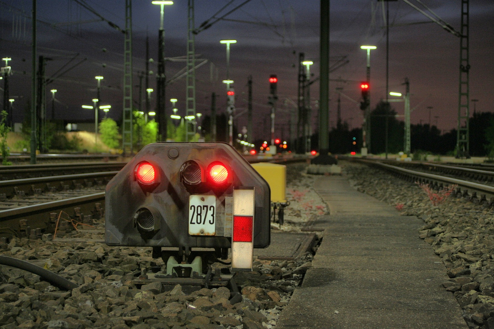
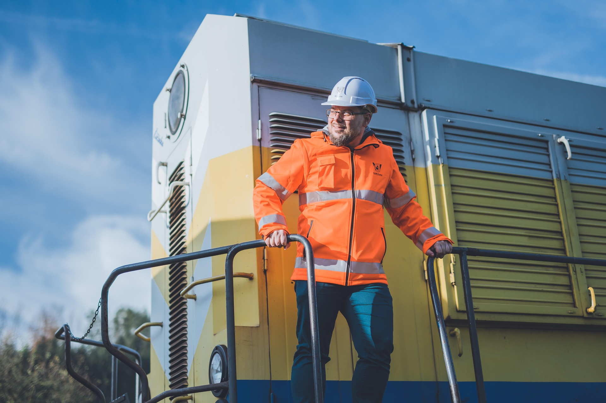
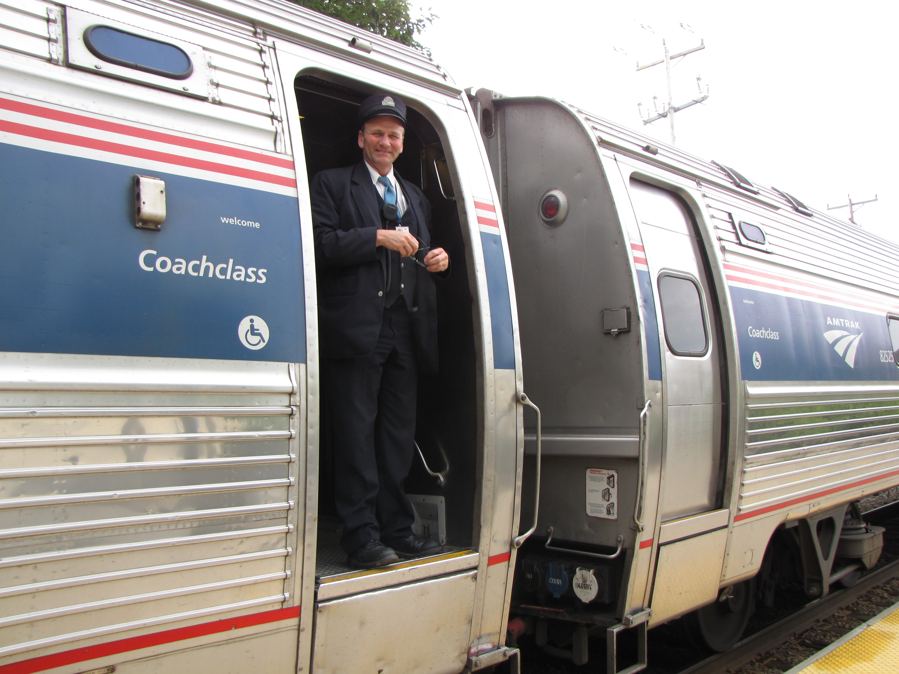

Станьте частью команды ПЖД
Первомайские железные дороги постоянно развиваются, и мы всегда рады единомышленникам. Если вы любите поезда, цените дисциплину и хотите стать частью настоящей железнодорожной команды, мы ждём вас.
Первомайские железные дороги постоянно развиваются, и мы всегда рады единомышленникам. Если вы любите поезда, цените дисциплину и хотите стать частью настоящей железнодорожной команды, мы ждём вас.

Вы — главный человек, который управляет движением на станции, обеспечивает безопасность перевозок и одновременно помогает нашим пассажирам.

Вы — сердце нашего движения. Человек, который управляет локомотивом и отвечает за жизнь пассажиров и сохранность грузов в пути.

Вы — главный помощник машиниста в пути и человек, который обеспечивает комфорт и безопасность внутри пассажирского вагона.
Вы примерите на себя реальные регламенты и обязанности работников больших железных дорог.
Сплочённый коллектив, где все горят общим делом и работают как единый механизм.
Если вы готовы присоединиться к нашей команде, свяжитесь с нами удобным способом.